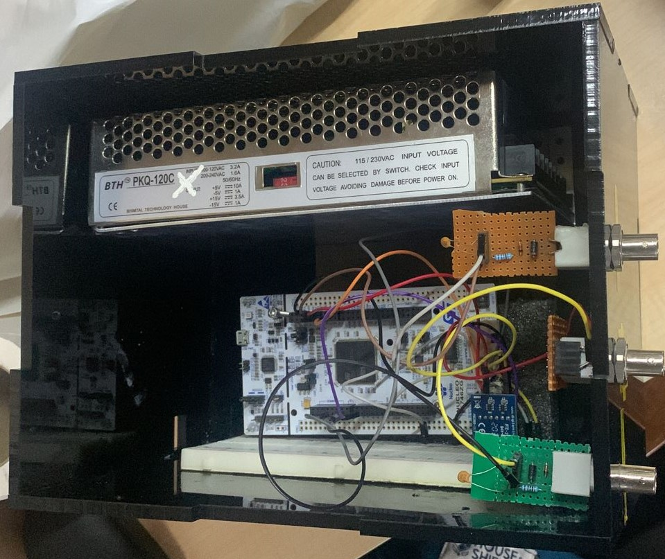
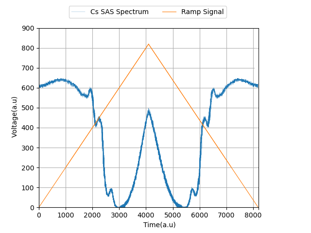
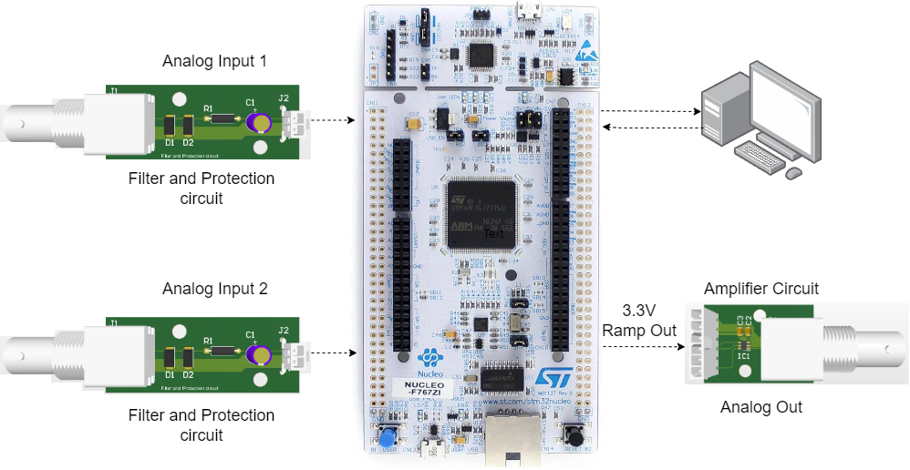
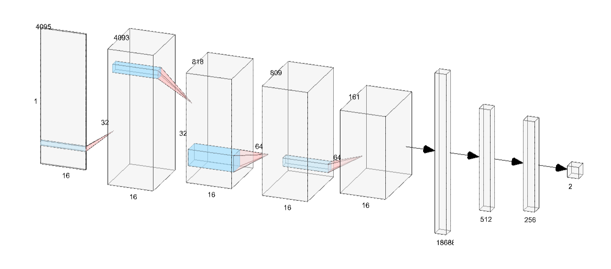
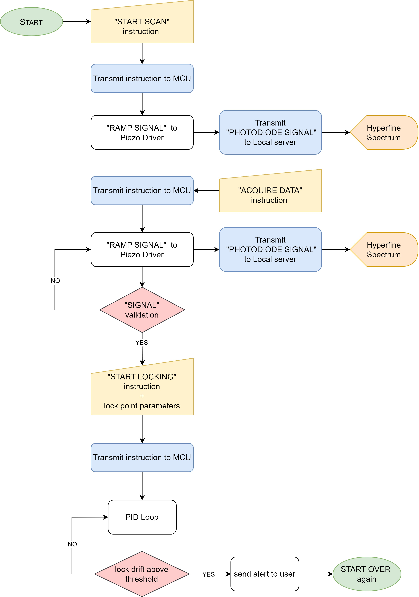
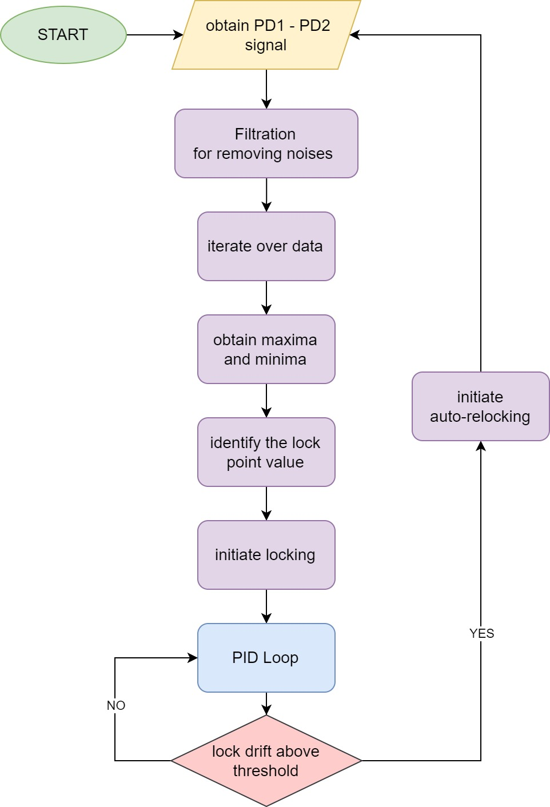

Laser Frequency Locking System LOCKED
Cost-Effective Stability via STM32 & Machine Learning
1. Introduction
In quantum physics experiments involving quantum computers or gravimeters, a frequency-stable laser source is indispensable. This project presents a cost-effective frequency locking system using an STM32 microcontroller. Our design minimizes frequency drift to well below the 5.0 MHz linewidth of the Cs atom transition, providing an economical alternative to high-end commercial locking modules.

2. Hardware Architecture
The system integrates optical spectroscopy with high-speed digital electronics. We utilize Dichroic Atomic Vapor Laser Lock (DAVLL) and Saturated Absorption Spectroscopy (SAS) to generate feedback signals.
Optics (DAVLL/SAS)
Generates saturated absorption peaks corresponding to the hyperfine transitions of Cesium atoms using an 852nm ECDL.

Electronics (STM32 Control)
Reads photodiode signals and implements a PID controller that drives a Piezo chip to actively stabilize the laser's cavity length.

3. Software Intelligence
We developed multiple layers of software intelligence to handle everything from manual peak selection to fully autonomous neural-network-based locking.
Machine Learning: CNN Peak Detection
Identifying lockpoints in noisy environments is a major challenge. We leveraged Convolutional Neural Networks (CNNs) to autonomously analyze signal patterns and identify resonance centers with high robustness, even in non-ideal signal-to-noise conditions.

Manual/Assisted Lock

Fully Autonomous Lock

4. Analysis and Acknowledgement
Our measurements include long-term stability tests and Allan Deviation analysis to ensure the lock remains robust over time.
I am deeply grateful to Asst. Prof. Dr. Santra (Group head, CAQT Lab, IIT Delhi) for his guidance. Special thanks to Deepshikha, Apoorva, and the PhD scholars of CAQT Lab for their consistent technical support throughout this project.